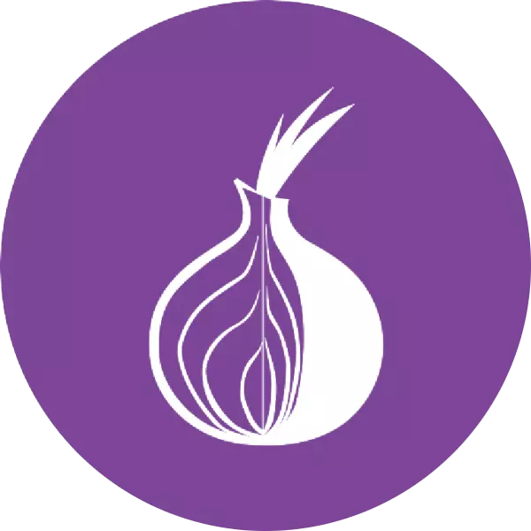

We believe security software like Kicksecure needs to remain Open Source and independent. Would you help sustain and grow the project? Learn more about our 14 year success story and maybe DONATE!
EXPKEYSIG
EXPKEYSIG
Introduction
W: An error occurred during the signature verification. The repository is not updated and the previous index files will be used. GPG error: tor+https://deb.whonix.org bookworm InRelease: The following signatures were invalid: EXPKEYSIG CB8D50BB77BB3C48 Patrick Schleizer adrelanos@kicksecure.com- Deprecation notice.
- Follow Kicksecure developments: Stay Tuned
- Base: Kicksecure is based on Debian.
- Signing key update requirement: Only useful in case of performing a Release Upgrade or fixing the signing key for Kicksecure or Whonix 17 on Qubes R4.2.[1]
- Release upgrade vs re-installation: For a comparison between a release upgrade and performing a full image re-installation, Update vs Image Re-Installation is applicable.
- Indicator of compromise? No. See Valid Compromise Indicators versus Invalid Compromise Indicators.
Update Kicksecure Signing Key
Only useful if:
- Performing a Release Upgrade, or
- Fixing the signing key for Kicksecure or Whonix 17 on Qubes R4.2.[1]
0 sysmaint notice
- Non-Qubes: See sysmaint notice in footnote. [2]
- Qubes: Use a Qubes Root Console.
Complete the following steps to add the Kicksecure Signing Key to the system's APT keyring.
Open a terminal.
1
Package curl needs to be installed.
Install package(s) curl following these
instructions:
1 Platform specific notice.
- Kicksecure: No special notice.
- Kicksecure-Qubes: In Template.
2 Update the package lists and upgrade the system.
sudo apt update && sudo apt full-upgrade
3
Install the curl package(s).
Using apt command line --no-install-recommends option is in
most cases optional.
sudo apt install --no-install-recommends curl
4 Platform specific notice.
- Kicksecure: No special notice.
- Kicksecure-Qubes: Shut down Template and restart App Qubes based on it as per Qubes Template Modification.
5 Done.
The procedure of installing package(s) curl is
complete.
2 Download Kicksecure Signing Key. [3]
Choose your operating system.
If you are using Debian, run.
Choose TLS or onion.
TLS (Debian)
TLS.
sudo curl --tlsv1.3 --output /usr/share/keyrings/derivative.asc --url https://www.kicksecure.com/keys/derivative.asc

onion (Debian)
Note: Downloading over onion requires an already functional system Tor.
sudo curl --proxy socks5h://127.0.0.1:9050 --output /usr/share/keyrings/derivative.asc --url http://www.w5j6stm77zs6652pgsij4awcjeel3eco7kvipheu6mtr623eyyehj4yd.onion/keys/derivative.asc
If you are using a Qubes Debian App Qube, run.
Choose TLS or onion.
TLS (Qubes-App-Qube)
TLS.
sudo curl --tlsv1.3 --output /usr/share/keyrings/derivative.asc --url https://www.kicksecure.com/keys/derivative.asc
onion (Qubes-App-Qube)
Note: Downloading over onion requires an already functional system Tor.
sudo curl --proxy socks5h://127.0.0.1:9050 --output /usr/share/keyrings/derivative.asc --url http://www.w5j6stm77zs6652pgsij4awcjeel3eco7kvipheu6mtr623eyyehj4yd.onion/keys/derivative.asc
If you are using a Qubes Debian Template, run.
Choose TLS or onion.
TLS (Qubes-Template)
TLS.
sudo http_proxy=http://127.0.0.1:8082 https_proxy=http://127.0.0.1:8082 curl --tlsv1.3 --output /usr/share/keyrings/derivative.asc --url https://www.kicksecure.com/keys/derivative.asc
onion (Qubes-Template)
Note: Downloading over onion requires an already functional system Tor.
sudo http_proxy=http://127.0.0.1:8082 https_proxy=http://127.0.0.1:8082 curl --output /usr/share/keyrings/derivative.asc --url http://www.w5j6stm77zs6652pgsij4awcjeel3eco7kvipheu6mtr623eyyehj4yd.onion/keys/derivative.asc
3 Signing key verification.
Optional. Recommended for Advanced Users only. If you have a good understanding of Verifying Software Signatures you can check the Kicksecure Signing Key for additional security.
4 Done.
The procedure of adding the Kicksecure signing key is now complete.
Footnotes
- ↑ 1 2 https://forums.whonix.org/t/error-gpg-key-whonix-kvm/22721
- ↑ Sysmaint Notice
 *
A
If using
*
A
If using user-sysmaint-split: The user must boot into the sysmaint session. For details and instructions on how to do so, see user-sysmaint-split. * B If using unrestricted admin mode: This sysmaint notice does not apply. Continue with the steps below. - ↑ See Secure Downloads to understand why
curland the parameters--tlsv1.3are used instead ofwget.
Placing an additional signing key into folder/usr/share/keyringsby itself alone has no impact on security as this folder is not automatically used by Debian's APT by default. Only when an APT sources list configuration file points to folder/usr/share/keyringsusing thesigned-bykeyword the signing key will be actually used. Therefore deleting keys in/usr/share/keyringsis optional if intending to disable an APT repository. See also APT Signing Key Folders.
Categories: Documentation